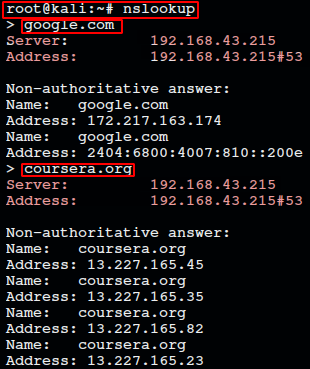

Index
DNS
DNS
:
Name Resolution Tools :
nslookup : output displays what server is used and resolution..

Public DNS servers :
Name servers specifically set up so that any one can use that for free.
Level 3 communication -> 4.2.2.1 -4.2.2.6
Google -> 8.8.8.8,8.8.4.4
Available thru anycast
DNS Registration and expiration :
Registrar - organization responsible for assigning individual doamin names to other individuals,orgs
Hostfiles : a flat file - network address ,server
Loopback Address : A way of sending network traffic to ur self.
127.0.0.1 <->IPv4. Almost every os has a host file contains this